마을 저작 탭을 만들고,
화면이 하네스에게 거짓말하던 두 곳을 고쳤다
데이터베이스에 「마을」탭이 생겼다. 집 형태와 배치 프리셋을 사람이 저작하고, AI 가 그 id 를 읽고, 하네스가 그 값으로 시공한다. 만드는 도중에 화면은 「통과」라고 하는데 하네스는 집을 한 채도 못 세우는 형태 두 종류를 실측으로 찾아 규약을 시공기와 맞췄다.
- 탭은 돈다. 「세계」그룹의
구조물과지형사이, 집 형태 + 배치 프리셋 두 종류를 한 탭에서 저작한다. 탭을 열기만 해서는 레코드가 하나도 생기지 않는다(제로 부트스트랩). - 사슬이 실제로 닫힌다. 저작한 프리셋이 시스템 프롬프트의
## 마을 저작 데이터섹션에 실리고,author_village({ presetId })로 시공하면 집 6채가 전부 화이트리스트 안의 형태로 서고 설계도에preset:vpreset태그가 남는다. - 규약이 시공기와 갈라져 있었다. 날개 하한이 내장 형태보다 조여 있었고(3×4 vs 실제 3×3), 시공기가 요구하는 열 높이 규약은 화면이 아예 보지 않았다. 둘 다 고치고 회귀 테스트로 못 박았다.
1. 생긴 것 — 레일 한 칸, 목록 창 하나
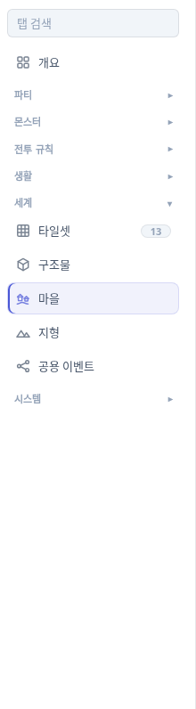
구조물 → 마을 → 지형. 배지 숫자는 사용자 레코드 수만 센다(내장 34종은 세지 않는다).집 형태 / 배치 프리셋)이 축이고, 오른쪽 상세가 고른 종류를 편집한다.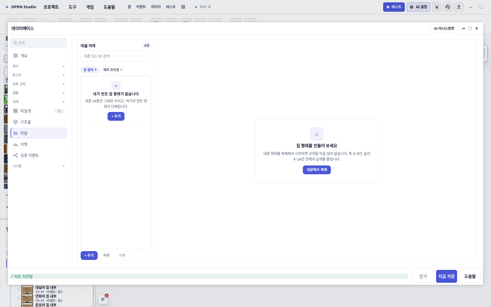
villageTemplates / villagePresets 는 undefined 그대로다. 내장 34종은 코드에 남고 레코드가 되지 않는다.2. 집 형태 — 바운딩 박스 + 날개, 격자로 확인
집 형태는 바운딩 박스 하나와 그 안에 붙는 직사각형 날개 목록이다. 날개 합집합이 집 바닥이라 숫자만으로는 ㄱ 자인지 ㅜ 자인지 알 수 없어서, 편집기 옆에 격자 미리보기를 함께 그린다.
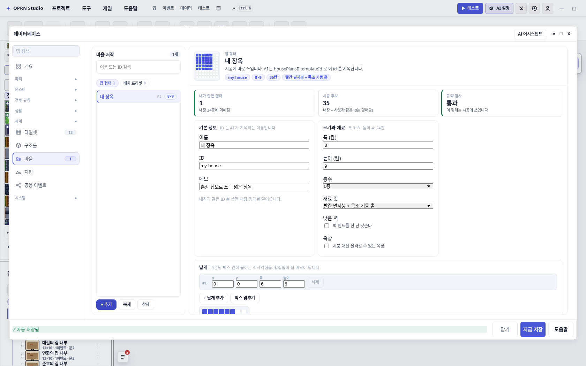
ID 는 AI 가 housePlans[].templateId 로 지목하는 이름이고, 메모도 AI 컨텍스트에 실린다.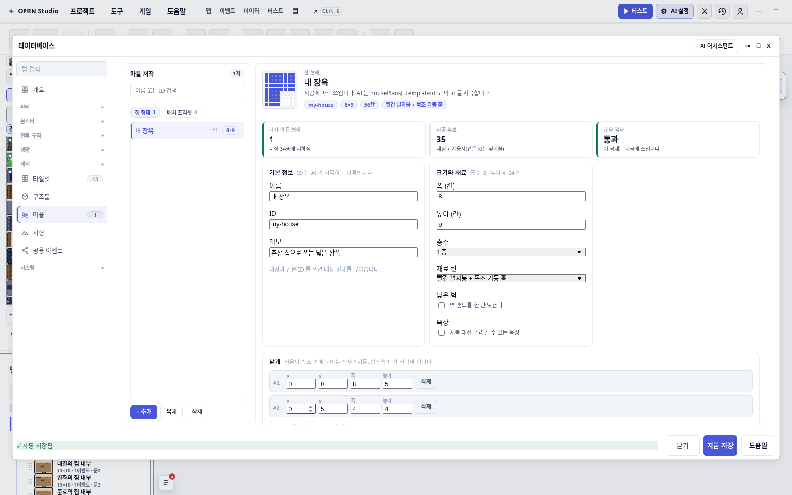
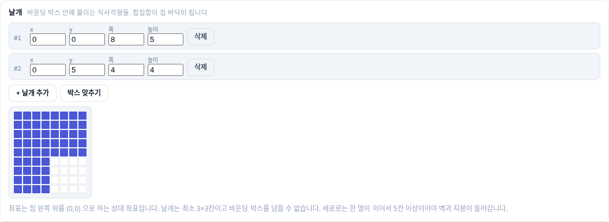
박스 맞추기는 빈 줄·열을 없애고 바운딩 박스를 날개 합집합에 맞춘다. 안내 문구의 하한 숫자는 상수에서 뽑아 쓴다 — 문장에 손으로 박으면 규약이 바뀔 때 화면만 거짓말을 한다.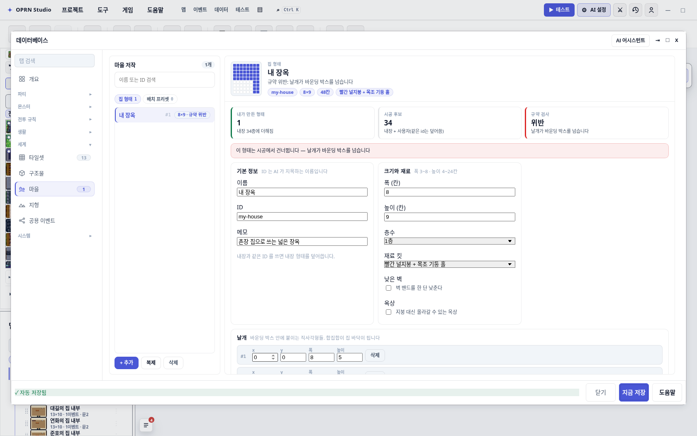
규약 위반, 상세에 빨간 안내가 뜨고, 시공에서는 그 형태만 건너뛴다(경고 1줄, 시공 실패 아님).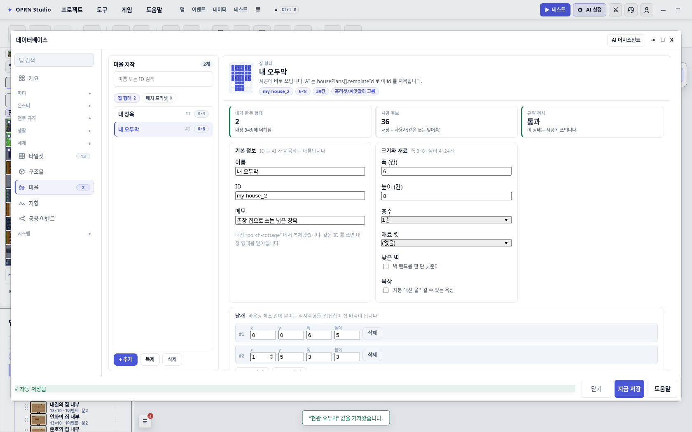
clonedFrom 만 계보로 남아서, 이후 내장이 바뀌어도 사본은 그대로다. 날개 #2 가 3×3 인데 통과 — 이게 아래 4장에서 고친 것이다.3. 배치 프리셋 — 고른 값만 키로 남는다
프리셋의 모든 값은 「지정 안 함」에서 시작한다. 고른 값만 레코드에 키로 남고, 비운 값은 코드 기본값과 씨앗값이 담당한다. 그래서 프리셋 하나가 마을 생성기를 통째로 대체하지 않고, 사용자가 신경 쓴 부분만 덮는다.
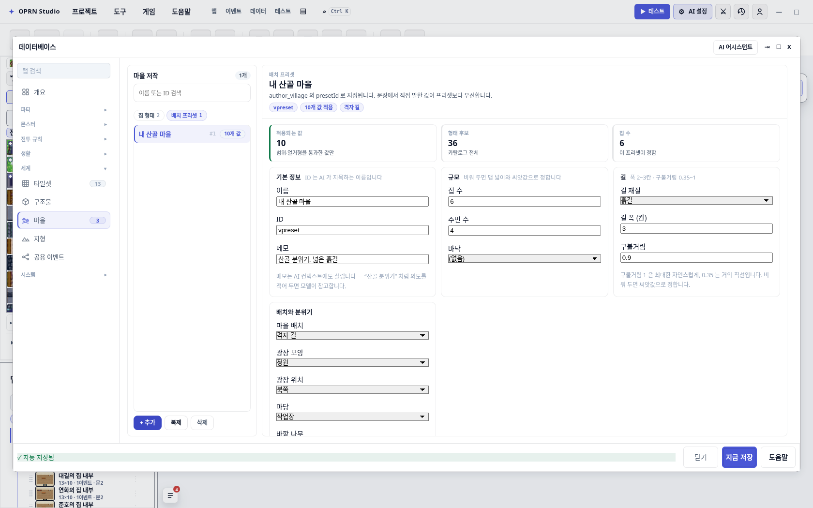
VILLAGE_RANGE, VILLAGE_PATH_STYLES …)에서 그대로 나온다. 길 폭 2~3, 구불거림 0.35~1 처럼 전에 화면과 하네스가 갈라졌던 항목이 여기 있다.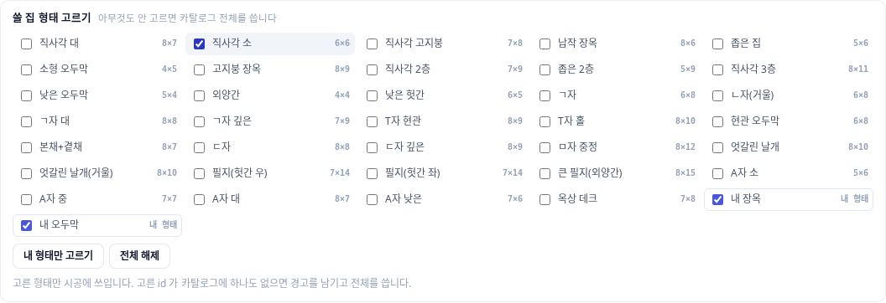
쓸 집 형태 고르기는 카탈로그 전체(내장 34종 + 사용자)를 체크박스로 내주고, 고른 id 만 templateIds 로 저장한다. 하나도 안 고르면 전체를 쓴다.참조는 따라간다. 집 형태를 지우면 프리셋 화이트리스트에서도 빠지고, id 를 바꾸면 프리셋이 새 id 를 가리킨다. 죽은 id 를 남기면 시공 때 경고가 되기 때문이다.
4. 화면이 하네스에게 거짓말하던 두 곳
탭의 존재 이유가 "사용자가 고른 값이 그대로 시공된다" 이므로, 화면이 받아주는 값과 하네스가 지을 수 있는 값이 어긋나면 탭 자체가 무의미해진다. 캡처를 돌리다가 어긋남 두 개를 실측으로 잡았다.
(1) 날개 하한이 내장 형태보다 조여 있었다
내장 「현관 오두막」을 복제 버튼으로 가져온 직후, 화면이 이렇게 말했다:
사용자 집 형태 "내 오두막" 를 건너뜁니다: 날개는 최소 3×4칸이어야 합니다
그런데 하네스는 이 형태를 아무 문제 없이 짓는다 — 내장 34종에 들어 있는 형태이기 때문이다.
VILLAGE_RANGE.wingH.min 이 4 였다. 내장 34종의 날개를 전부 세어 보면 최소가 3×3 이다
(「현관 오두막」의 뒷채 3×3, 「ㄷ자」의 두 다리 3×3). 하한을 3 으로 내리고, 다시는 갈라지지 않게
내장 34종을 복제 변환에 태워 전부 규약을 통과하는지 보는 테스트를 넣었다.
// test/villageAuthoringData.test.ts
it("내장 34종을 복제해 온 레코드는 전부 규약을 통과한다", () => {
const rejected = HOUSE_TEMPLATE_DEFS.map((def) => {
const resolved = templateFromRecord(templateRecordFromDef(def, `my-${def.id}`));
return "reason" in resolved ? `${def.id}: ${resolved.reason}` : undefined;
}).filter((entry) => entry !== undefined);
expect(rejected).toEqual([]);
});
이 테스트는 곧바로 값을 했다. 처음엔 손으로 레코드를 짜다가 lowWall 을 빼먹어서
「낮은 오두막」·「외양간」이 걸렸다 — 그래서 화면의 복제 버튼이 쓰는 변환(templateRecordFromDef)을
그대로 태우도록 고쳤다. 사본 만들기와 규약 검사가 같은 경로를 지나야 이 테스트가 의미를 가진다.
(2) 시공기가 요구하는 「열 높이」를 화면이 아예 보지 않았다
더 무거운 쪽이다. 아래 형태(8×8, 위 4행만 폭 8, 아래 4행은 왼쪽 4칸)는 화면이 통과 라고 했다. 하네스에 넣으면 이렇게 실패한다:
오른쪽 절반(x=4~7)은 이어진 칸이 4행뿐이다.
[only-my-house] ok=false
집을 한 채도 시공하지 못했다 — 맵/bounds가
좁거나 후보 슬롯이 전부 물·숲·광장에
막혀 있다. …
shapes=[]같은 프리셋에서 rect-small 만 남기면 4/4 가 선다. 맵 크기 문제가 아니다.
원인은 houseKit.ts 의 stampFootprintHouseKit 에 있다. 집은 열 단위로 세워진다 —
각 열의 이어진 구간 하단에 벽 밴드를 깔고 그 위에 지붕을 얹는다. 그래서 구간 높이가
벽 밴드 + 2 행보다 작으면 그 열은 지을 수 없다.
| 조건 | 벽 밴드 | 열마다 필요한 최소 행 | 내장 근거 |
|---|---|---|---|
| 1층 · 보통 벽 | 3 = 2 + (2×1 − 1) | 5 | 「ㄷ자」의 가운데 열이 정확히 5행 |
| 2층 | 5 = 2 + (2×2 − 1) | 7 | 「직사각 2층」 7×9 |
| 3층 | 7 = 2 + (2×3 − 1) | 9 | 「직사각 3층」 8×11 |
| 낮은 벽(헛간·외양간) | 2 | 4 | 「외양간」 4×4 |
이 계산을 templateFromRecord() 에 그대로 옮겼다. 이제 화면이 이유까지 말한다:
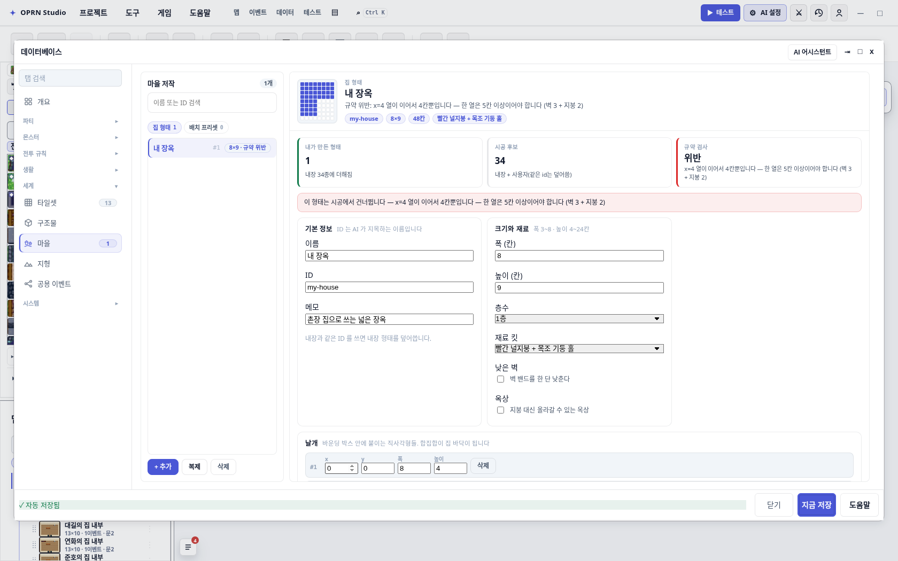
x=4 열이 이어서 4칸뿐입니다 — 한 열은 5칸 이상이어야 합니다 (벽 3 + 지붕 2). 히어로·목록 행·통계 스트립·빨간 안내 네 곳이 같은 문장을 쓴다.같이 딸려 온 것 둘:
- A자 지붕 킷은 지붕이 피라미드라 날개 하나 + 높이 =
벽 밴드 + ⌊(폭−1)/2⌋ + 1로 고정이다. 시공기에 있던 이 검사도 화면에 옮겼다. 내장 A자 4종(5×6, 7×7, 8×7, 낮은 7×6)이 이 공식을 만족한다는 사실이 34종 왕복 테스트로 증명된다. + 날개 추가의 기본 크기가 3×4 였다 — 1층 집에서는 누르는 순간 항상 규약 위반이었다. 이제minWingRun()을 써서 층수·낮은 벽에 맞는 높이(1층이면 3×5)로 시작한다.
고친 뒤 같은 ㅜ 자를 한 행만 키우면(8×9, 위 5행 + 아래 4행) 화면도 통과라고 하고 하네스도 짓는다.
실측: [legal-L] ok=true Village authored: 4/4 houses, shapes=["rect-small","my-house","my-house","rect-small"].
5. 사슬이 실제로 도는지 — 저작 → AI → 시공
프리셋 하나(집 6채, 흙길 폭 3, 격자 길, 정원 광장, 작업장 마당, 형태 후보 my-house + rect-small)와
사용자 형태 하나(8×9 L 자, 목조 홀 킷)를 넣고 사슬 양쪽을 실측했다.
AI 가 읽는 것 — 시스템 프롬프트에 실린 섹션
## 마을 저작 데이터(유저가 데이터베이스 「마을」탭에서 정한 값 — 코드 기본값보다 우선)
유저가 직접 만든 프리셋과 집 형태입니다. 마을 요청에서 이 id를 쓰면 유저가 정한 값 그대로 시공됩니다:
### 배치 프리셋 (author_village presetId 로 지정)
- 내 산골 마을 (vpreset: 집 6채, street-grid, 길 dirt, 폭 3, 광장 garden, 마당 workshop, NPC 4)
형태 후보: my-house, rect-small
메모: 산골 분위기, 넓은 흙길
### 내 집 형태 (housePlans[].templateId 로 지정)
- 내 장옥 (my-house, 8x9, 킷 timber-hall)
메모: 촌장 집으로 쓰는 넓은 장옥
author_village({ target, houseCount, countPolicy, presetId }) 로 프리셋을 적용하세요. 목록에 없는 id는 쓰지 마세요.저작 레코드가 없으면 이 섹션 자체가 프롬프트에 없다 — 빈 탭이 프롬프트를 늘리지 않는다.
하네스가 지은 것 — author_village({ presetId })
| 확인한 것 | 결과 |
|---|---|
| 시공 요약 | Village authored: 6/6 houses on map_existing. 성공 |
| 설계도에 프리셋 계보 | 광장 영역 태그에 preset:vpreset |
| 화이트리스트가 실제로 작동 | 집 6채가 전부 후보 안 — my-house 2채, rect-small 4채 |
| 사용자 형태가 장식이 아님 | 화이트리스트를 my-house 하나로 좁히면 4채 모두 사용자 형태 |
모르는 presetId | 경고 1줄로 흘리고 기본값으로 시공(실패 아님), preset: 태그 안 남음 |
지어진 맵 자체 — 타일을 그려서 눈으로
표의 태그만으로는 「형태가 실제로 저 모양으로 섰는지」를 알 수 없어서, 시공된 맵을 칩셋으로 렌더했다.
같은 프리셋(vpreset)을 50×50 / seed 7 로 다시 돌린 결과다.
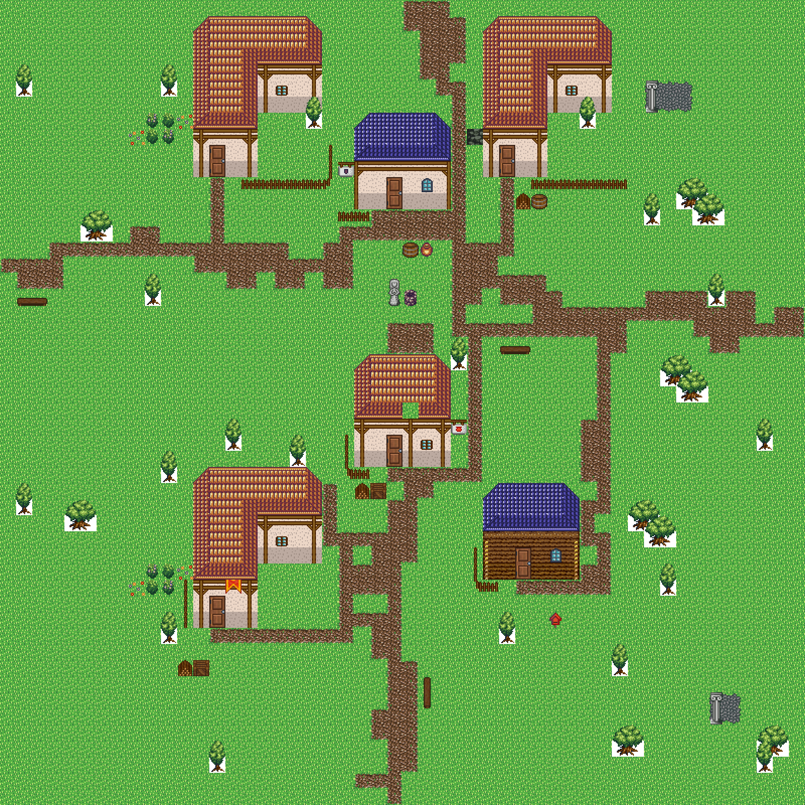
my-house + rect-small)로 지은 마을. 설계도 shape 태그는 my-house 3채 · rect-small 3채, 광장 태그에 preset:vpreset, 주민 4명. 형태 배분 자체는 지도와 seed 에 따라 흔들린다(위 표의 run 은 2 : 4 였다) — 고정되는 건 후보 밖 형태가 안 나온다는 것뿐이다.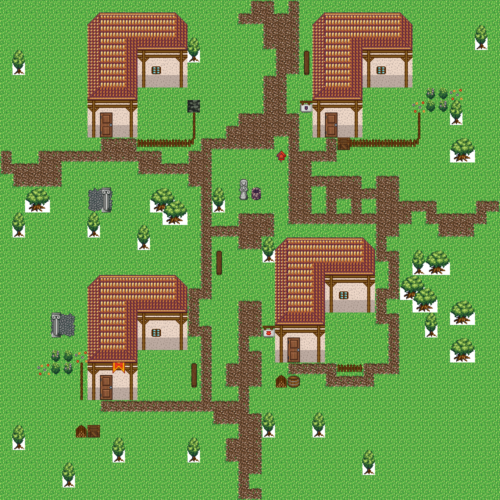
my-house 하나로 좁힌 40×40. 4채 전부 8×9 L 자다 — 화면에서 그린 날개 두 개(8×5 + 4×4)가 그대로 바닥이 됐다. 내장 34종은 후보에서 빠져 한 채도 섞이지 않았다.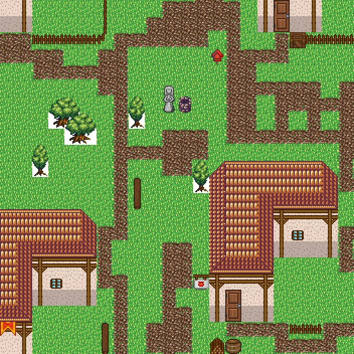
timber-hall 킷이 붙어 기와 지붕·기둥 현관·창·문이 서고, 마당은 프리셋의 workshop 대로 통과 간판이 놓인다. 폭 3 흙길(roadNaturalness 0.9)이 구불거리며 문 앞으로 붙는 것도 프리셋 값이다.6. 커버리지와 확인하지 못한 것
test/villageAuthoringData.test.ts— 17케이스. 읽기·오버라이드·AI 컨텍스트·시공 반영·JSON 왕복 + 내장 34종 왕복·열 높이·A자 지붕.test/databaseVillageView.test.ts— 16케이스. 규약 통과·내장 복제·날개 편집·짧은 열 위반·프리셋 키 생성/삭제·참조 정리.- 주변 회귀:
houseKit,houseTemplates,houseTemplateCatalog,structureKitEditorDialog,authorVillage— 103 + 27 통과.
- 타입체크를 돌리지 못했다. 이 환경에 설치된 TypeScript 가 7.0.2 인데
package.json은^5.7.0을 선언한다. TS 7 이baseUrl을 제거해서tsconfig.json21행에서 바로 멈춘다 — 내 변경과 무관하고, 손대지 않은 파일이다. - 무거운 테스트 하나가 시간으로 흔들린다.
authorVillageFacade의 100×100 눈 도시 케이스가 90초 제한에 걸린다. 같은 커밋을git stash로 되돌려 돌려도 똑같이 걸리므로(기준선 144초) 환경 부하 문제로 판단했다. 사용자 레코드를 전혀 쓰지 않는 경로다. - 3칸 폭 집은 내장에 없다.
templateW.min은 3 으로 남겼는데, 폭 3 집을 하네스가 잘 짓는지는 확인하지 않았다. - 날개 합집합이 3행짜리 바닥이 되는 극단(바운딩 박스는 4행)은 열 높이 규약에서 걸리지만, 그 조합만 따로 시공해 보지는 않았다.
바뀐 파일: src/editor/tools/village/authoringData.ts(날개 하한, minWingRun(), shapeReason()),
src/editor/panels/databaseVillageView.ts(하한 문구·입력 min·날개 기본 크기를 상수에서 뽑기),
test/villageAuthoringData.test.ts, test/databaseVillageView.test.ts, openwiki/editor-database.md.
화면 캡처는 scripts/_capture-village-tab.mjs, 지어진 맵 렌더는 scripts/_render-village-authoring-evidence.mts.